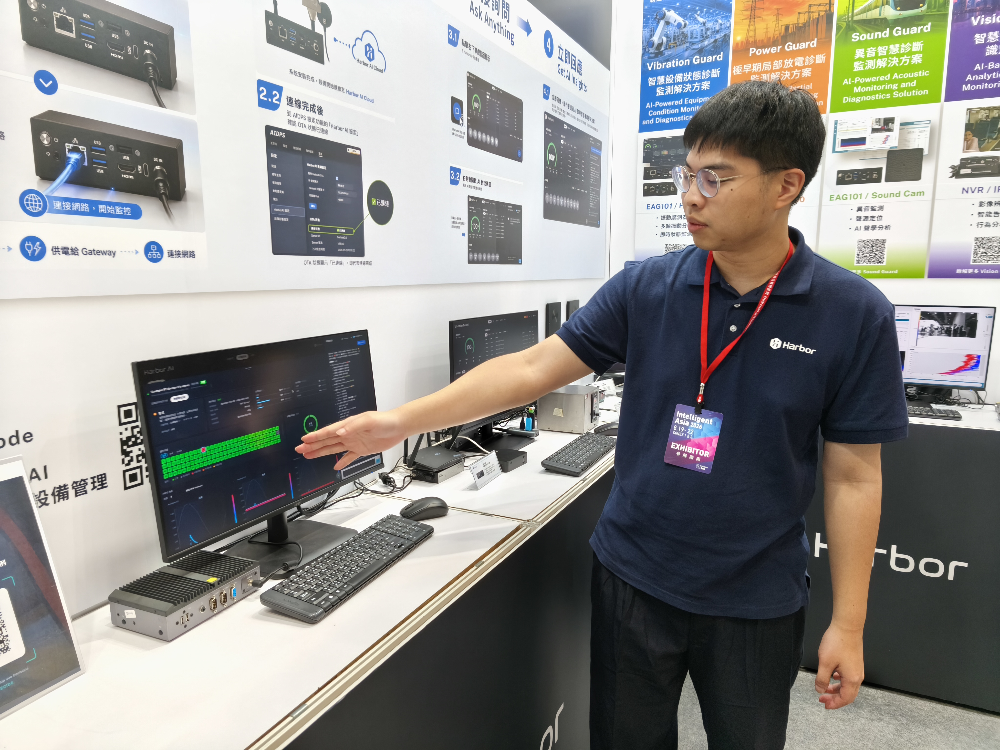
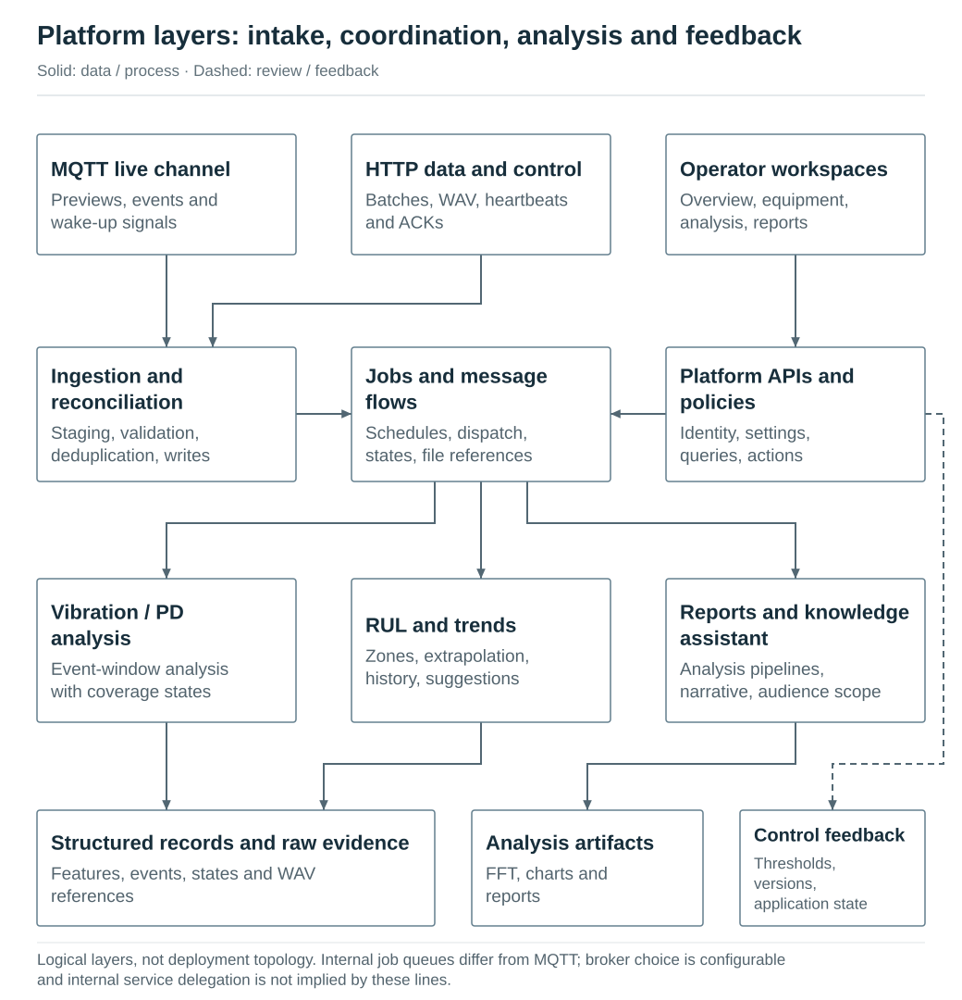
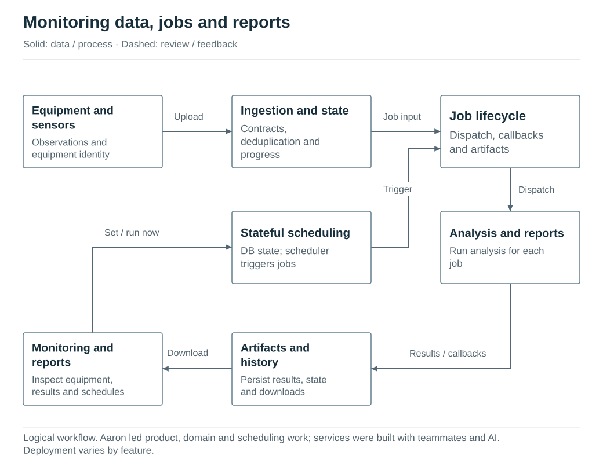
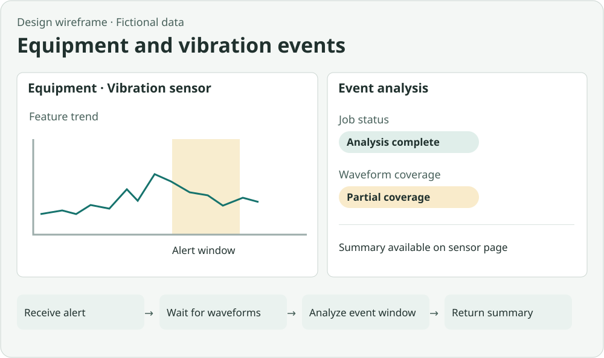
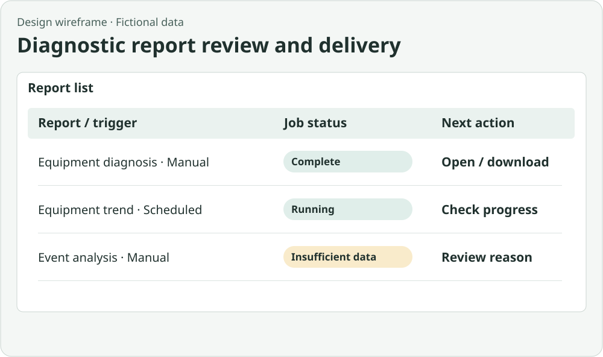
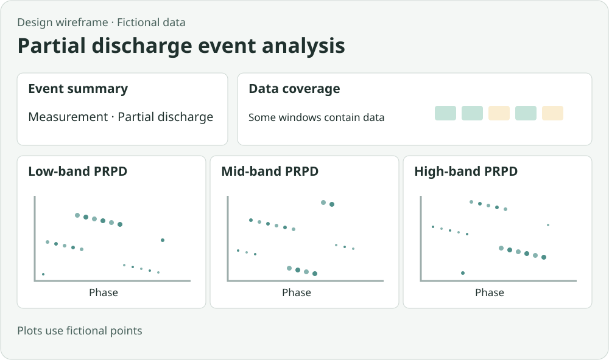

Context and objectives
Field teams need to connect continuous readings, alarms and raw waveforms: identify equipment needing attention, investigate events, interpret trends, produce reports and retain handling records.
The following relationships are based on current system/operation documents and limited source checks, including preview functionality. They do not establish deployment at every site or version. My contribution is stated separately in the overview and cases.
- Start with site and equipment states, then follow events into the relevant sensor analysis panel.
- Separate live previews, reliable backfill and background analysis; features, WAV and FFT artifacts serve different purposes.
- RUL, event analysis and reports share platform state and data while retaining distinct jobs, interpretations and validation scope.

Platform modules and functions
| Module | Design and system mechanism |
|---|---|
| Equipment and sensor management | Know which equipment and sensor the data belongs to. Site, Gateway and sensor identity/configuration connect to equipment states, measurement types and operating entries. |
| Live monitoring and equipment workspace | Find anomalies across the site, then focus on one machine. Health summary, sensor selection, axis/band readings and feature trends; selecting an event freezes the view at its time. |
| Alarms, events and handling records | Connect occurrence, analysis and human handling in a traceable chain. Persist and incrementally track events, group analysis windows, expose results and retain pending/completed handling states. |
| Vibration and PD event analysis | Investigate the data and diagnostic basis around an alarm. Wait for waveforms, bound the analysis, dispatch domain services and store results; present execution and data completeness separately. |
| RUL and threshold feedback | Interpret current state, trends and estimated time to a threshold. Zones, bottleneck components, curves, fit quality and history; model suggestions, platform adoption and Gateway application are recorded separately. |
| Reports, scheduling and artifacts | Turn analysis into reports that can be rerun, inspected and delivered. On-demand or recurring reports, job lifecycles, failure/insufficient-data states, HTML/PDF and DOCX for supported report types. |
| Assistant, notifications and administration | Make results understandable, deliver notifications and maintain the system. Restrict knowledge by audience and show waiting/tool states, alongside roles, language, notification preferences and release operations. |
System architecture and workflow
Architecture overview
- Inputs
- Equipment/sensor identity, live features and events, batch data and raw WAV, plus user settings.
- Process
- Ingest and reconcile data channels, persist platform state and manage background work; dispatch vibration, PD, RUL and report workflows from events, schedules or manual requests.
- Outputs
- Equipment/sensor workspaces, event analysis and handling records, RUL/threshold feedback, inspectable downloadable reports and traceable artifacts.

Workflow diagram
Event-driven and recurring analysis are separate. The diagram follows an alarm through data readiness and analysis back to the interface, retaining completeness and handling results. RUL and reports use their own schedules or manual triggers.

MQTT and HTTP: separate responsibilities
At the edge, MQTT carries previews, events or wake-up notifications; HTTP handles feature/WAV batches, heartbeat-based command retrieval and replies. Previews reconcile with later authoritative data. Internal background job queues form a separate layer from the MQTT broker.
Queues, file references and job states
Uploads are accepted and staged, then passed by reference to background workers for parsing, validation and persistence, keeping large waveforms out of messages. I contributed RabbitMQ/message-flow decisions; broker choice depends on version and configuration, not an assumption that every site is identical.
What features, WAV and FFT retain
Features and structured events support routine states, trends and queries; raw WAV provides evidence for deeper diagnosis. Feature CSV, FFT caches, charts and reports are derived artifacts linked back to jobs by reference. Retention scope and periods depend on data use and version.
Logical analysis boundaries and execution mode
Newer architecture documents integrate RUL, anomaly, PD and reporting capabilities as in-process platform modules; the diagram shows logical boundaries. Report records move into the platform database, with exceptions before initial import and for shadow workers. Actual environment states require separate verification.
Interface and interaction
Equipment: readings, trends and events in one workspace
Open an alert from the equipment feature trend. Once recorded, the vibration event waits for waveforms, analyzes only the event window, and returns a summary to the sensor page. Waveform coverage is shown independently from job completion.

RUL: read current state, timing and uncertainty together
The sensor panel presents zones, remaining time, bottleneck components, history and forecast curves. Confidence means fit quality. “Threshold not reached” or a blank date does not establish safety; read it with the current zone, data time and curve range.

Reports: connect background jobs to review and downloads
Review on-demand and scheduled artifacts grouped by sensor, distinguishing completed, running, failed and insufficient-data states. Report types retain their own content and formats; report and RUL-analysis schedules are managed separately.

Event analysis: separate results from completeness
Vibration analysis summarizes available readings and features within the event window. For partial discharge, the event summary, data coverage, and PRPD bands help users decide what the plots can support.

- Waiting for data: the alarm is saved while waveforms arrive.
- Analyzing: the data scope is fixed and a background service is processing it.
- Complete/partial: results are available with actual data coverage disclosed.
- No data/skipped/failed: retain the reason; this does not mean no anomaly.
More technical detail
Separate live overviews from long-window analysis
The overview answers what needs attention now; long-window analysis explains changes over time. Queries show a summary, while lengthy analysis runs as a separate task with stored results, progress and missing-data states.
Platform state is the source of commands
Commands and acknowledgements rely on persistent platform state and HTTP. MQTT provides wake-up notifications, with periodic heartbeats covering missed notifications. Full state updates and independent waveform requests follow different replacement rules; operation is verified per version.
Product ownership and analysis validation
I own product and domain design, analysis methods and experiments, sensor scheduling, cross-service workflows, and integration validation. Vibration analysis checks valid operating intervals and spectral features. Partial discharge analysis compares event-window coverage. RUL estimates require separate checks of data assumptions and model behavior.
How the old and new systems connect
New 2.0 features developed alongside compatibility, migration and replacement work.
- 01
Coexistence
Synchronize equipment and data while protecting new 2.0 settings and features.
- 02
Gradual replacement
Transfer equipment control, audit migration and connect features to native 2.0 workflows.
- 03
Independent operation
Version 2.0 now runs without 1.0, with ongoing features and releases.
Define who may update each data field
I established synchronization and field protections distinguishing data the legacy system could update from settings managed by 2.0, preserving new features and user settings during coexistence.
Move equipment control to 2.0
I helped move device management and state transitions into 2.0 and verified integration with the legacy system.
Make legacy migration auditable
Combined migration lists and checks requiring explicit sensor mappings. Missing or ambiguous mappings stop the process and generate a report; corrected lists are revalidated to reduce misassigned equipment data.
Results and validation scope
Deliverables
Version 2.0 operates independently of 1.0, with integrated report services, platform dispatch and downloads and continuing development and releases.
Validation and limits
Platform capabilities are described from current documentation and limited source checks, including previews and later pipelines. They do not establish complete deployment, integration or acceptance at every site/version.